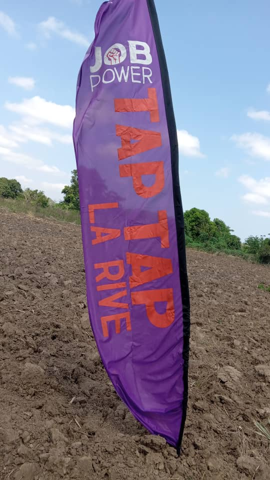

Pour les jeunes haïtiens de 18 à 35 ans
Rejoins une coopérative qui t'offre un emploi, une formation, un encadrement... et une vraie chance de bâtir ta vie.
La terre comme moteur, la jeunesse comme force. KONKRET ne te donne pas seulement un salaire... KONKRET te donne un avenir. Depuis 2011, nous organisons l'emploi des jeunes haïtiens dans les zones rurales du Nord, en les plaçant dans des fermes partenaires structurées et en les accompagnant à chaque étape.

Nous recevons des candidatures chaque semaine. Réserve ta place maintenant.